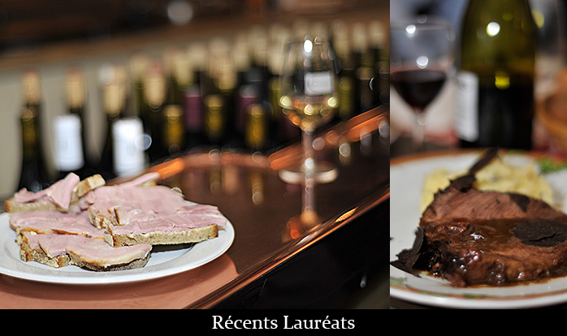

Lauréats de l'année 2016
Les diplômés sont:
Le P'tit Zinc
2, rue des Plantes, 75014 PARIS
Eric Mauboussin
La Tute
7 rue Rossini, 75009 PARIS
Emmanuel Maquaire
L'Envie du Jour
6 rue Nollet, 75017 PARIS
Sergio Lino
Le Verre à Vin
215 rue de Bercy, 75012 PARIS
Christophe Chenal et Rémy Demulder
Au Bougnat
26 rue Chanoinesse, 75004 PARIS
Julien Guillut
Lauréats de la saison 2015-2016
Les diplômés pour 2015/2016 sont:
Le Potovin
12, rue Brézin, 75014 PARIS
Véronique Guers et Sarah Hammi
Le Royal Saint-Jacques
236, rue Saint-Jacques, 75005 PARIS
Willy Dreyfus-Weill
Le Café Ponce
17, rue Poncelet, 75017 PARIS
Jérôme Trauchessec
Le Bizetro
6, rue Georges Bizet, 75016 PARIS
Pierre Parola
Au Bon Coin
21, rue de la Collégiale 75005 PARIS
Julien Guiliut
Le Bougnat
15, rue Torricelli, 75017 PARIS
Eric Deconquand
La Petite Perigourdine
39, rue des Ecoles, 75005 PARIS
Jean-Luc Martin
Lauréats de la saison 2012-2013
Les diplômés en 2013 sont:
La Cave Beauvau
4, rue de Saussaies 75008 PARIS
Tél : 01 42 65 24 90
Le Vaudésir
41, rue Dareau – 75014 PARIS
Tél : 01 43 22 03 93
Le Monge
77, rue Monge 75005 PARIS
Tél : 01 43 36 05 57
Lauréats de la saison 2011-2012
Les diplômés en 2012 sont:
Le Templier
25 bis, rue de l’Armorique 75015 PARIS
Tél : 01 43 22 36 83
Le Berger
17, place de la Nation 75011 PARIS
Tél : 01 43 73 25 09
Le Gymnase
208, Blvd Raspail 75014 PARIS
Tél : 01 43 20 76 15
Cartouche Café
4, rue de Bercy 75012 PARIS
Tél : 01 40 19 09 95
Lauréats de la saison 2010-2011
Les diplômés en 2011 sont:
Le Va Et Vien
6, place Félix Éboué 75012 PARIS
Tél : 01 43 44 46 36
Chez Dominique
23, rue Danielle Casanova 75001 PARIS
Tél : 01 47 03 45 24
Les Racines
22, rue Monsieur le Prince 75006 PARIS
Tél : 01 43 26 03 86
Le Paul Bert
18, rue Paul Bert 75011 PARIS
Tél : 01 43 72 24 01
Lauréats de la saison 2009-2010
Les diplômés en 2010 sont:
Le Poch’tron
25, rue de Bellechasse 75007 Paris
Tél : 01 45 51 27 11
Le Grand Comptoir
125, rue d’Alésia 75014 PARIS
Tél : 01 45 42 18 37
La Bonne Franquette
2 rue des Saules 75018 PARIS
Tél : 01 42 52 02 42
Le Ruisseau
137, avenue
Galliéni 94160 Saint-Mandé
Tél : 01 43 74 02 39